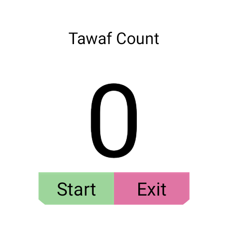
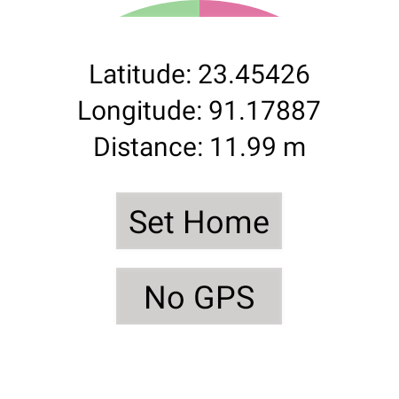
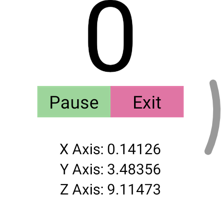

Research
My research work is focused on Computer Vision and AI Robotics. I have been working with Dr Sheikh Anowarul Fattah, Professor, Department of EEE, BUET for the past 3 years. Our research is focused on biomedical disease identification through computer vision and machine learning techniques. Besides, as part of my job as a Research Engineer at Celloscope, i have been working on NLP tasks (such as: implementation of ASR, TTS, NLU Based Chatbot) etc. since December 2021. Some of our works are published as research articles. I have completed my undergrad thesis under the supervision of Dr Apratim Roy, Department of EEE, BUET. You can find link to my undergrad thesis paper below. I have also been worked as a research assistant at Bangladesh University of Engineering and Technology under the supervision of Dr. A. B. M. Alim Al Islam.My story of past research experiences (or otherwise known as research statement) can be found HERE
Current Works
- Document Question Answering Query answering models are helpful for finding answers in documents because they can extract the answer to a question from a text. Some approaches for answering questions can produce responses devoid of context!
We are currently developing an end to end document question answering software to batch process the purchase invoices of industry and provide summary of overall finance status of a company.


- Fine-tuning WHISPER on Bengali Language Whisper is a multi-language Automatic Speech Recognition model. It is the latest speech to text model currently available on the engineer's community. However, the performance of the model on Bengali Language is very mediocre. Since this model has shown tremendous excellence in high resource languages: such as - english, our assumption is that, a fine-tuning operation on a large Bengali Speech dataset might provide a strong performance in Bengali as well. This notebook can be modified for finetuning whisper on any specific dataset.

- Rail Cop Derailment is a significant problem in the rail system in developing and underdeveloped countries. Derailment can occur for number of reasons. For example, natural disasters or unethical activities by human. However, a complete detection system for derailment is yet unavailable in the market. Our approach focuses on developing such a system that can sense the vibrations of the railtrack and can detect whether there is a derailment within a certain range of the track.

Our current prototype uses multichannel piezoelectric crystals to sense the vibrations in railtracks and convert the mechanical signals to electrical signals. For processing the signals and making decisions, we have trained and deployed tinyML and EdgeML models in RP2040 and Atmel processors.

- Hajj Project
  
Hajj is a sacred activity for muslims which is performed in Macca, Saudia Arabia. However, since a huge crowd occurs during the holy month of Ramadan as Hajj starts, it becomes difficult for Saudia Government to manage this huge crowd. The goal of this project is to manage crowds during Hajj, a holy gathering for Muslims which is performed in Makkah. We have developed a WearOS-compatible smartwatch app to monitor Tawaf, a holy activity done during Hajj, to act as a tawaf tracker for elderly people. Here, we are using multimodal sensor data such as accelerometer, GPS etc. to effecttively recognize the gestures performed during Tawaf. This is a small part of the entire goal to monitor all the activities during Hajj.
Past Research
2022
- SpectroCardioNet: An Attention Based Deep Learning Network Using Triple-Spectrograms of PCG Signal for Heart Valve Disease Detection [PDF]
- IEEE Sensors Journal
- Sakib Chowdhury, Monjur Morshed, Shaikh Anowarul Fattah Phonocardiogram (PCG) signal is used for the early detection of cardiovascular diseases as it captures the heart sound characteristics. In this paper, a spectral attention based deep-learning network is proposed for the automatic detection of cardiac disease from the spectrograms of PCG signals, namely SpectroCardioNet. From a given PCG audio signal, in view of simultaneously utilizing both time and frequency domain information, spectrogram, delta-spectrogram and double-delta-spectrogram are generated. The extracted triple-spectrogram representation is applied in the proposed network as a three-channel 2D input, where it passes spectral and sequential feature paths. In the spectral feature path, a spectral attention block is designed to emphasizes some regions in the spectrograms based on a deep attention network and its output is then processed through the spectral pattern detectors. On the other hand, in order to extract the temporal behavior of the frequency components of the spectrograms, 1D convolution based sequential feature extractor is also proposed. Extensive experimentation is carried out on two standard PCG datasets and a very satisfactory performance is achieved in comparison to that obtained by some existing methods.

- SHONGLAP: A Large Bengali Open-Domain Dialogue Corpus [PDF]
- LREC
- Syed Mostofa Monsur, Sakib Chowdhury, Md Shahrar Fatemi, Shafayat Ahmed, Muhammad Abdullah Adnan We introduce, SHONGLAP, a large annotated open-domain dialogue corpus in Bengali language. Due to unavailability of high-quality dialogue datasets for low-resource languages like Bengali, existing neural open-domain dialogue systems suffers from data scarcity. We propose a framework to prepare large-scale open-domain dialogue dataset from publicly available multi-party discussion podcasts, talk-shows and label them based on weak-supervision techniques which is particularly suitable for low-resource languages. Using the framework, we prepared our corpus which is the first reported Bengali open-domain dialogue corpus, which can serve as a strong baseline for future works. Experimental results show that use of our corpus improve performance of large language models (BanglaBERT) to do downstream classification tasks during fine-tuning.

- An Intelligent Pixelated Electrode Array for High Density Surface Electromyography Sensors [PDF]
- Undergrad Thesis
- Sakib Chowdhury, Dipayon Kumar Sikder, Apratim Roy Surafce electromyography (sEMG) sensor is a non-invasive diagnostic tool for identifying muscle diseases which is also utilized in portable smart devices to recognize body mass compositions. In this article, we propose a novel pixelated electrode array that can modulate electrode size and leverage natural filtering property of electrodes to maximize the signal-to-noise ratio in different body locations and for individuals with varied skin features and composition. While determining the ideal electrode layout, the suggested concept significantly reduces the signal sample duration and is able to avoid additional computational overhead once the optimal arrangement is identified. Moreover, it offers a substantial advantage over traditional signal processing techniques, which need constant processing to filter out noise and improve the intelligent signal with digital filters and transceiver amplifiers. Because of truncated processing cost, the proposed array is suitable for wearable devices driven with low-power embedded microcontrollers, where high computational requirement often prove to be prohibitive.

2021
- CovTANet: A Hybrid Tri-Level Attention-Based Network for Lesion Segmentation, Diagnosis, and Severity Prediction of COVID-19 Chest CT Scans [PDF]
- IEEE Transactions on Industrial Informatics
- Tanvir Mahmud, Md Jahin Alam, Sakib Chowdhury, Shams Nafisa Ali, Md Maisoon Rahman, Shaikh Anowarul Fattah, Mohammad Saquib Rapid and precise diagnosis of COVID-19 is one of the major challenges faced by the global community to control the spread of this overgrowing pandemic. In this article, a hybrid neural network is proposed, named CovTANet, to provide an end-to-end clinical diagnostic tool for early diagnosis, lesion segmentation, and severity prediction of COVID-19 utilizing chest computer tomography (CT) scans. A multiphase optimization strategy is introduced for solving the challenges of complicated diagnosis at a very early stage of infection, where an efficient lesion segmentation network is optimized initially, which is later integrated into a joint optimization framework for the diagnosis and severity prediction tasks providing feature enhancement of the infected regions. Moreover, for overcoming the challenges with diffused, blurred, and varying shaped edges of COVID lesions with novel and diverse characteristics, a novel segmentation network is introduced, namely trilevel attention-based segmentation network. This network has significantly reduced semantic gaps in subsequent encoding–decoding stages, with immense parallelization of multiscale features for faster convergence providing considerable performance improvement over traditional networks. Furthermore, a novel tri-level attention mechanism has been introduced, which is repeatedly utilized over the network, combining channel, spatial, and pixel attention.

2020
- A RNN based parallel deep learning framework for detecting sentiment polarity from Twitter derived textual data [PDF]
- 2020 11th International Conference on Electrical and Computer Engineering (ICECE)
- Sakib Chowdhury, Md Latifur Rahman, Shams Nafisa Ali, Md Jahin Alam Social media platforms have become one of the primary mediums of communication nowadays. Along with communication, they are currently being utilized in a wide range of activities like digital marketing, customer care, e-learning etc. The unceasing use of social media is generating gigantic amount of textual data everyday. It is essential to properly analyze these data with the consideration of underlying human traits sentiments for exploring the full potential of these platforms. However, sentiment analysis from text has been considered as a challenging task because of the rapid use of informal and noisy words. Updated and powerful word embeddings are being invented almost every two years so that the machines could understand the underlying features of linguistics. Each of these embedding techniques excel in different aspects. In this paper, we present a novel RNN based sentiment polarity detection framework which feeds the power of three different word embeddings: Word2Vec, GloVe and SSWE into a single powerful network with three parallel branches. The proposed network effectively utilizes the semantic, syntactic and sentiment polarity wise embeddings in word vectors encoding three major aspect of language from the viewpoint of extracting sentiment information from text. Posts collected from twitter was used to train and validate the proposed network. The results demonstrate that the proposed network containing parallelly configured multiple word embeddings outperforms the single word vectorization techniques. Additionally, it shows comparable or better evaluation scores when compared to several contemporary state-of-the-art models.